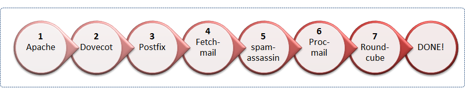
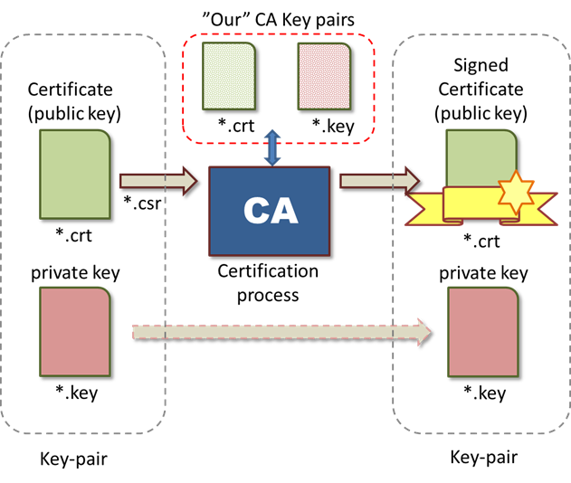
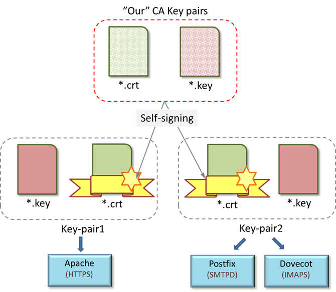

The setup process
It is now time to start the setup process. There are a number of steps that needs to be done and as we progress each step will be tested separately as far as possible before we move on to the next and finally the complete system. The steps are explained below and also illustrated in Figure 7, “Steps in the setup process”:
Figure 7. Steps in the setup process

Setup Apache to accept https:// traffic by creating a self-signed certificate for Apache. This is necessary so that we can access Roundcube (see below) securely. We start here since this is a self-contained task and can be tested separately.
Setup Dovecot as an IMAP server. We will also configure the server to use a secure connection based on SSL/TLS so we can securely access our mails. This requires us to create another set of self-signed certificates to be used by Dovecot. In addition we will also configure Dovecot to be used as the authentications server for Postfix so that only authenticated users can send mail through our SMTP server (i.e. postfix) this is very important to avoid creating an open relay that could potentially be exploited by a spammer.
Setup Postfix to both accept incoming SMTP traffic (with authentication via Dovecot) as well as sending mail as a relay through to the ISPs SMTP server if the recipient is non-local. We also need to instruct postfix to use procmail as LDA ([Definition: Local Delivery Agent]) to store the mails in a suitable location in the mail storage.
Setup fetchmail to gather mail from any external mail providers and deliver it back to postfix.
Setup spamassassin as a spam filtering engine in the background by using its daemon mode option. Received mails are then run through the spamassassin client (spamc) by procmail.
Setup procmail to use spamassassin to filter spam and store them in a separate folder on the IMAP server. The emails will be delivered to procmail from Postfix (piped) when postfix has decided that the mails should be delivered to a local user. Postfix will invoke procmail to do the local delivery as the user who’s mail we are going to deliver. The instructions to procmail will then be read from <user home directory>
/.procmailrc.Finally we will install and setup Roundcube to access the IMAP server to be able to read and manipulate mails via a Web-interface. This will also include the configuration of a database (MySQL) for Roundcube to make use of.
Some ports and acronyms used
For the TCP/IP communication there are a number of ports and acronyms that are used in a mail setup and it is good to have a shortlist handy. Table 2, “Port numbers relating to mail handling” and Table 3, “Acronyms used in this tutorial” list the ports and terms we will be using. For historic reasons several port numbers have been used for the same purpose and can lead to some confusion. This is especially true for the port numbers possible to use for secure SMTP. This is further elaborated in the section dealing with procmail setup.
In our setup we will use the secure version of all the protocols involved. This will unfortunately add some steps in the process but doing anything else would be irresponsible!
Table 2. Port numbers relating to mail handling
| Port | Protocol | Comment |
|---|---|---|
| 80 | HTTP:// |
Hypertext protocol |
| 443 | HTTPS:// |
Encrypted hypertext protocol over SSL/TLS |
| 143 | IMAP |
[Definition: Internet Message Access Protocol] used to access a mail storage |
| 993 | IMAPS |
Encrypted IMAP protocol over SSL/TLS |
| 25 | SMTP |
[Definition: Simple Mail Transfer Protocol ]used to speak with a mail server |
| 465 | (SMTPS) |
Simple Mail Transfer Protocol with SSL. Unfortunately this is not an officially recognized/registed port for this purpose. Historically this can be traced back to Appendix A of the 1996 non-standard standard The SSL Protocol Version 3.0 This port should not be used in a modern server setup. Use port 587 (see below) instead. |
| 587 | SMTP/SMTPS |
Email submission (See RFC 2476). This is the officially registered port that should be used when a mail client submits a message to a mail server. The difference with Port 25 is that port 25 should only be used for mail-server to mail-server communication. For historical reason, port 25 has also been used to accept mail client submissions. |
| 110 | POP3 |
[Definition: Post Office Protocol]. The "old" way of accessing a mail storage. Should not be used any more (only listed here for completeness) |
| 995 | POP3S |
Encrypted POP3 protocol over SSL/TLS |
Table 3. Acronyms used in this tutorial
| Acronym | Description |
|---|---|
| SMTP |
[Definition: Simple Mail Transfer Protocol], protocol used to send mail between servers. Note do no confuse with the name of the postfix two daemons SMTP/SMTPD |
| SMTPS |
Encrypted SMTP protocol (using TSL/SSL) |
| IMAP |
[Definition: Internet Message Access Protocol], The protocol between a mail client (e.g. Roundcube) and the mail server. Allows manipulation of mails and synchronizing local mails to a local storage. |
| IMAPS |
Encrypted IMAP protocol (using TSL/SSL) |
| TLS |
[Definition: Transport Layer Security] (formly known as SSL=[Definition: Secure Socket Layer]). There are technical differences but for end users they do behave the same. There is however one crucial difference in that SSL uses encrypted communication from the very start while TLS uses plain text initially and once the two communicating partners has agreed on encryption the remaining communication is encrypted. This has the advantage that the same port can be used for both encrypted and non encrypted version of a protocol. |
| MTA |
[Definition: Mail Transfer Agent], generic name for the actual program that speaks SMTP (in our case postfix) |
| MUA |
[Definition: Mail User Agent], generic name for the actual mail client (Roundcube in our case) |
| LDA |
[Definition: Local Delivery Agent], generic name for whatever program is responsible for the final mail delivery to the recipients mail box (procmail in our case) |
| PAM |
[Definition: Pluggable Authentication Modules]. A generic framework for authentication in a Linux system. This allows clients to perform authentication on a system without knowing the exact methods this authentication is done by. The historic way of performing authentication is by the usage of a user/password file but other ways are available as well, for example via LDAP ([Definition: Lightweight Directory Access Protocol]) databases. |
| SASL |
[Definition: Simple Authentication and Security Layer]. This is another generic framework for authentication but intended to be used by various internet protocols. Usage of this framework allows decoupling of protocol authentication from the actual system it is talking to. |
| PEM |
[Definition: Privacy Enhance Mail], A file format to store SSL/TLS key pairs, commonly used in Unix like systems. |
Using SSL/TLS certificates
It is impossible to avoid SSL/TLS ([Definition: Secure Socket Layer] / Transport Layer Security) certificates when configuring a mail server using encrypted communication. We must therefore start with a simplified explanation of key pairs and certificates since they are the heart in the encryption of the data between a client and a server. We will use openssl to manage the so called SSL/TLS encryption (this is used by most people in the Unix world). In Appendix E, Create SSL/TLS keys and certificates with openssl. we discuss more in detail how to use this library and associated programs directly to create the necessary keys.
The openssl library supports most (if not all) public used cryptos intended for secure communication and has a very large number of commands and sub-commands. In the following we will only shortly discuss the basic usage of openssl since a full discussion is outside the scope of tis tutorial.
![[Caution]](/usr/local/share/oxygen14.0/frameworks/docbook/xsl/images/caution.png) | Caution |
|---|---|
openssl has been around for a long time and as it has evolved old parameters which for all practical purposes and intents are deprecated still remains in the program to ensure backward compatibility. This means that the number of commands, options and suboptions possible to give to openssl is mind boggling. Consequently a number of scripts available on "the net" uses old deprecated methods since there are very little incentive to learn new (and better) ways of doing things. The learning curve for openssl is quite steep but luckily we only need a small subset of available commands. |
Certificates and keys
In short the SSL/TLS certificates (or SSL/TLS key-pair) serve two purposes:
Form the encryption base for the public key anti-symmetric encryption (different keys for encryption and decryption) used in the SSL/TLS (openssl can also handles symmetric encryption).
Prove the identity of the server that you are connecting to
Public key encryption is based on two different (anti-symmetric) keys, one public key and one private key.
The common way is to use the public key to encrypt data to be sent and the private key to decrypt the same data. However, since the encryption is anti-symmetric it can also be used the other way around. Encrypting with the private key and decrypted with the public key. This can be used to assure that a message comes from a trusted sender as follows.
Assuming we know with 100% certainty that the public key we have really comes from a specific server. If the server then encrypts a message string with its own private key we can decrypt it with the public key and if it decrypts correctly to a valid message we can be reasonable sure that the message really comes from that specific server.
![[Note]](/usr/local/share/oxygen14.0/frameworks/docbook/xsl/images/note.png) | Note |
|---|---|
When talking about SSL/TLS certificates one should really refer to them as X.509 certificates which was standardized a long time ago by ITU-T. The original designer of SSL/TLS certificate handling, Netscape (anyone remembers them?), used the already existing standard of X.509 certificates when they created the SSL/TLS protocol. The use of X.509/SSL/TLS certificates on the internet is described in RFC 5280. The name SSL/TLS certificates has stuck (probably since it is easier to say than X.509) and we will be using this name in this text. However when using openssl to create certificates one specifies X.509 as the format for the certificates so it might be good to know and understand where this strange name comes from. |
The public key is in this context is usually referred to as a certificate and is
by convention often stored in a file with the ending “*.crt” and the private key (again by convention) is stored in a file
with the ending “*.key”. This naming convention
is unfortunate since the keys are actually stored in a format known as
PEM (see the fact box below).
| Note |
|---|---|
The most common format in the Unix world to store the certificates in is in the so called PEM (originally from [Definition: Privacy Enhanced Mail]) format. This is basically a base64 encoding of the binary data that makes up the key (the X.509 specifies the binary format to be in ASN.1). The base64 encoding makes it possible to treat the file as ordinary text files. There are other possible binary formats of keys (and certificates) Windows usually use one of those but we will not discuss this further here. A common practice to differentiate the contents of the files where the public and private keys are stored is to use different suffixes on the certificate and the private key files. Even though the keys are in the same format (PEM) they are stored in files with different suffixes. One very common way is to give the public key the ending “*.crt” and the private key the ending “*.key”. This is not ideal since our view is that the file suffix should indicate the technical format/encoding of the file. However, this is common practice so we just accept this for now. (In Appendix E, Create SSL/TLS keys and certificates with openssl we show another naming standard that makes more sense to us.) It is also possible to store both the public and private key in the same file. This is useful for applications where we are never expected to manually hand out a public key but where this is done programmatically between programs/system. The advantage of storing both the public and private key in the same file is obvious; one never risks of mixing the public/private key with the wrong other key. The PEM format specifies a textual header before the private and public key so they are easily identified even if they are stored in the same file. |
In order to prove the authenticity of a public key some company that are trusted (a [Definition: certification agency], CA) will first encrypt the servers’ public key (against a quite hefty fee). When the public key is distributed it can be verified by the client by decrypting it with the CAs public key. The public key from the CA has to have been previously distributed in some other way so that the client has access to that public key in safe way. Therefore such a public key, which is usually a root certificate, is included with the distribution of browsers. The principle of this is shown in Figure Figure 8, “SSL/TLS Certificate signing process”.
Certificates can also be chained. A super trusted company can sign a certificate from a trusted company which in turn could sign your certificate (an intermediate agent). If your browser have the (root) certificate from the super trusted company it will implicitly also validate any child certificates stemming from this super trusted company.
In our setup we will become our own certification agency and create a “super” key pair that we will use to sign (encrypt) the public keys we will be using. Hence the name self-signed certificates. (Technically speaking this is only one definition of the term self-signed certificate and is theoretically not quite correct. It is however a common “miss-use” of this term. In Appendix XX we elaborate on this.)
Protocols using encryption in our setup
In our setup we will use SSL/TLS certificates (encryption) to handle the following protocols
HTTPS - Encrypted communication to our Web-server
SMTPS - Encrypted communication with our Mail-servcer (postfix)
IMAPS - Encrypted communication with our Mail-storage-server (Dovect)
In principle we could use the same key-pair for all these channels but in our setup we will use one key-pair for the Web-server and one key-pair for both the SMTPS and the IMAPS channels. The motivation for this is that the Web-server is one standalone server which could be used for a multitude of applications and the SMTPS/IMAPS channels logically belong together as one application. The public HTTPS key should also be distributed to Web-clients wanting to connect to us without getting browser warnings.
In addition we will create our own CA (root) certificate that we will use to sign all these key-pairs (certificates). Our hierarchy of certificates is shown in Figure 9, “Certificate hierarchy”. The public root certificate should also be distributed to all clients for them to verify the other certificates.
We should also make a note of the key length here. By default openssl uses key lengths of 1024 bits. To protect your ordinary mail from the occasional snooping this is probably good enough.
Figure 8. SSL/TLS Certificate signing process

However, for corporate level protection a key length of at least 2048 bits are recommended and for those who are paranoid a key of 4096 bits can be used. The main drawback of longer key length is the increased processing power it requires for decryption/ encryption.
| Note |
|---|---|
From 2011 Microsoft has removed all 1024 bit root certificate from the distribution of its browser. |
A valid question now is who signs the CA (root) certificate?
The answer is no-one. These certificates (key-pairs) are trusted because we say so (they are truly self-signed). They don't need higher authority, technically they have a flag inside them saying that "this is a trusted root certificate that doesn't need anyone else to vouch for it", hence we should trust it. This also means that when we install these root certificates we have to make sure we are installing them from a secure source that we trust. It could potentially be devastating if we were to install bogus root certificates that were controlled by an "evil" entity since they could potentially fool us into believing that a signed program was produced by a trusted party when it in fact could be a spy program.
Browsers, for example, come with a large set of root certificates from trusted
sources as do OpenSuSE Linux distribution. In the case of OpenSuSE all trusted root
certificates can be found under the directory /etc/ssl/certs/
All key-pairs are created using the openssl package and more specifically the “openssl” command using various options. As mentioned before the steps to create these keys (certificates) and doing the signing are not really difficult taken step by step (and is shown in Appendix E, Create SSL/TLS keys and certificates with openssl.) but there are a number of steps to be taken and since even professional system administrators do this fairly seldom there is no point in committing all the detailed steps by memory.
Exactly for this reason there are a number of shell scripts floating around that lines up the commands needed to create all these certificates so one does not have to memorize all the steps in using the openssl library. The library and tool isn't exactly a user friendly so even professionals that deals with this library on a regular basis create there own utility script to make life easier. Unfortunately there isn't a set of “commonly agreed” utility scripts.
X.509/SSL/TSL certificates introduces several terms that must be understood. The most important is the [Definition: Distinguished Name] or DN. This is a unique name used to identify a particular certificate (and key) among all other 1000s of certificates in the world. Hence this must be unique to each certificate.
Figure 9. Certificate hierarchy

| Note |
|---|---|
Beware that many SSL/TLS scripts floating around on the net are “Chinese whispers”. While they do work they use long since obsolete options and ways to do things that are no longer recommended (at least since 2004!). The reason is most likely that getting into the details of openssl is not something many people want to do. So finding a small script on the net that seems to do the job is good enough for most people and so the scripts (unfortunately) gets handed down to the next unsuspecting generation. Again, in Appendix E, Create SSL/TLS keys and certificates with openssl we show the proper modern way of handling openssl. |
The DN is in turn made up of several fields such as organization name, unit within the
organization, town, state etc. One field in the DN with very special meaning is the
[Definition: Common Name] (or CN) field. This is used to identify the
domain name (e.g. www.example.com) that is used to access the server where the
certificate is used. If the CN differs from the URL that is used
to access (for example) a Web-server you will normally get a warning that the
authenticity of the server cannot be guaranteed. The CN is
normally the fully qualified domain name (FQD) of the server. This poses some
problems if the server is multi-homed, i.e. it can be accessed using different URLs,
for example if both http://www.example.com and
http://example.com are valid aliases. For this reasons there are
extensions (in the X.509 standard) that makes it possible to add
a number of aliases that the certificate should still be valid under (all aliases
must still resolve to the same IP address though). How this is
done is further described in Appendix E, Create SSL/TLS keys and certificates with openssl. This is also an
example of quite important information that is not commonly found on all the sites
that discuss certificate handling.
The final step after creating all these certificates is to install the public CA (the root certificate) in our browser and mail client(s) to avoid warnings about untrusted certificates. This is strictly speaking not necessary but will avoid annoying warnings whenever you try to connect to your server, for example via a Web-browser.
| Note |
|---|---|
A X.509/SSL/TSL certificate is not exactly identical to the public key. A certificate acts as a container for the public key and adds additional information such as who has issued the certificate and who has guaranteed the authenticity of the certificate and various other information such as how long the certificate is valid for. If you want more information about a certificate openssl can display a more detailed textual printout. The following examples shows how to printout information in various situations. To view information on the public certificate use the command
$> openssl x509 –noout –text –in mycert.pem
To view the technical details about the private key use the command $> openssl rsa –noout –text –in mykey.pem To view the details about a certificate request use the command
$> openssl req –noout –text –in mykey.pem
|
In the following description of the setup of Apache and Dovecot/postfix we have made use of the utility scripts that are available with OpenSuSE since this is the easiest way to get up and running without having to learn too much details about openssl. However, after you have a working setup we strongly encourage you to read through Appendix E, Create SSL/TLS keys and certificates with openssl. where a more satisfying and complete description and setup of SSL/TLS certificates can be found. Reading through this appendix will hopefully take away part of the “black-magic” surrounding this area.